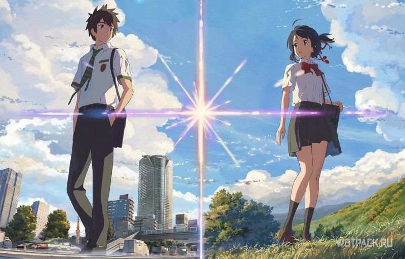
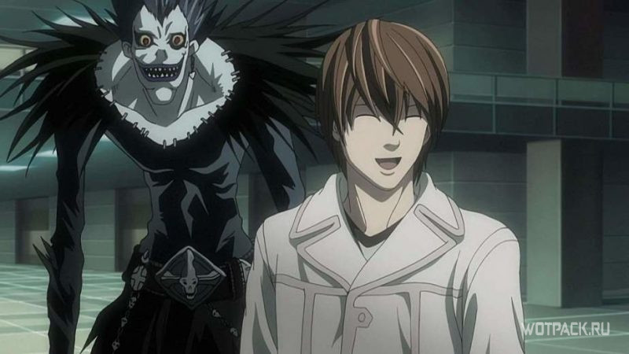
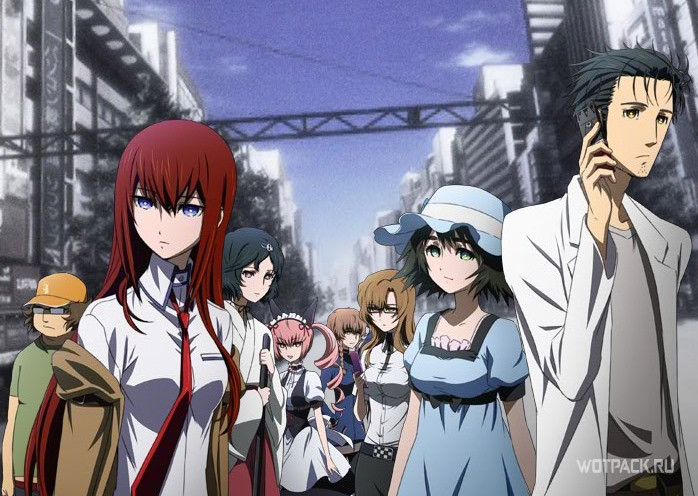
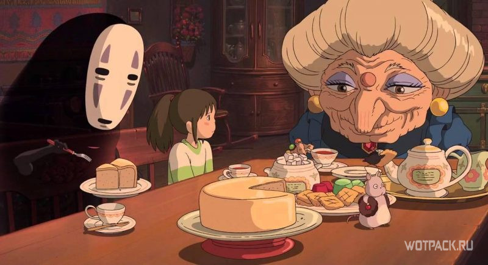
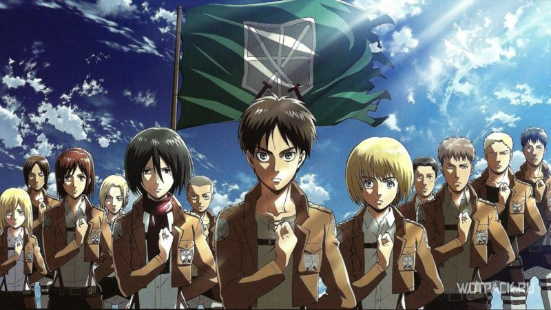

Твое имя
Полнометражный фильм талантливого японского режиссера , которого называют «вторым Миядзаки», имел огромный коммерческий успех, особенно в Японии.
И стал самым кассовым аниме в мире, завоевав также немало наград и номинаций .
Великолепный стиль рисовки и красивая музыка завораживают, а сама история затрагивает тему трогательной дружбы и первой любви, преодолевающей время и расстояние.
В центре событий находятся старшеклассники Таки и Мицуха: юноша живет в Токио, девушка – в захолустной провинции, и оба мечтают о совсем другой жизни. В один прекрасный день они понимают, что обрели способность перемещаться в тела друг друга во время сна и проживать чужую жизнь. Со временем это даже начинает казаться им интересным: они оставляют друг для друга записки, посредством которых общаются, и устанавливают особые правила поведения, пока находятся в чужом теле.
Но однажды эта способность исчезает так же необъяснимо, как и появилась. Таки решает во что бы то ни стало отыскать Мицуху…
Тетрадь смерти
 |Основой для аниме стала одноименная манга, состоящая из 12 томов и выходившая в 2003-2006 годах.
Согласно опросу, проведенному в 2007 году в Японии, она вошла в десятку лучшей манги всех времен.
Было создано множество ее адаптаций – от игровых фильмов до видеоигр и сериалов. Неудивительно, что аниме с необычным сюжетом тоже стало очень популярным
В руки старшеклассника Ягами Лайта, отличника и сына полицейского, попадает загадочная тетрадь заскучавшего бога смерти – шинигами Рюка.
Если вписать в нее имя человека, тот сразу же умрет. С помощью тетради Лайт решает бороться с преступниками и очень скоро становится вершителем судеб,
которого общественность прозывает «Кира» – от английского «киллер».
Но вскоре по его следу начинает идти гениальный детектив, работающий под псевдонимом L.
Он не может совершить ошибку, иначе станет жертвой могущественной силы, заключенной в тетради.
Но и Лайт тоже не собирается сдаваться, поэтому между ним и детективом завязывается острое интеллектуальное противостояние.
Врата Штейна

Тема путешествий во времени всегда притягивала к себе людей, а помимо оригинального сюжета это аниме, являющееся адаптацией визуального романа, может порадовать еще и качественным исполнением.
Поэтому тайтл уже долгое время попадает во всевозможные рейтинги лучших аниме-сериалов.
Действие разворачивается в Акихабаре – одном из крупнейших торговых центров Токио, где можно встретить самых разных удивительных людей.
Молодой ученый по имени Ринтаро Окабэ возглавляет небольшую компанию энтузиастов, куда входят хакер-отаку Итару Хасида, подруга детства Ринтаро – Маюри Сиина, и юная гениальная девушка Курису Макисэ.
Они собираются в Лаборатории, пытаясь создать из хлама различные изобретения, и однажды им удается переделать обычную микроволновку в настоящую машину времени.
Вот только вскоре это оборачивается для группы ученых настоящей катастрофой: они уже не рады, что открыли Врата Штейна.
Кроме того, ими заинтересовывается загадочная организация SERN, деятельность которой также сосредоточена на экспериментах со временем.
Унесенные призраками
Этот мультипликационный фильм считается вершиной творчества японского режиссера Хаяо Миядзаки и фигурирует во многих списках величайших анимационных лент в истории.
Он стал самым успешным фильмом в Японии и завоевал премию «Оскар» и приз «Золотой медведь» на Берлинском кинофестивале.
Десятилетняя девочка Тихиро вместе со своими отцом и матерью попадают в странный пустующий городок, в котором много пустых ресторанов.
Поев в одном из них, родители превращаются в свиней, и теперь девочка должна расколдовать их. Она узнает, что этот городок – некий загробный мир, а управляет здесь всем колдунья Юбаба.
Однако даже в этом недружелюбном месте Тихиро удается найти друзей, среди которых – мальчик по имени Хаку.
Он советует новой подруге попросить у Юбабы работу – согласно древнему закону, в этой просьбе ведьма никому не может отказать.
Благодаря этому героиня все больше погружается в удивительный мир, знакомясь с его необычными обитателями и не теряя надежды на спасение родителей.
Атака титанов
Основанное на одноименной манге аниме отличается продуманным интригующим сюжетом и в хорошем смысле тяжелой и мрачной атмосферой.
Восхищение зрительской аудитории вызывают также качественно прописанные герои – как главные, так и второстепенные, мощные опенинги и динамичность.
События развиваются в альтернативной вселенной, похожей на Европу XIX века, где человечество долгое время борется с титанами – гигантскими существами, пожирающими людей ради удовольствия.
Чтобы обезопасить себя, людям пришлось окружить свои поселения тремя высокими стенами, через которые гиганты пройти не могли. Сотню лет они прожили вполне спокойно, но однажды стену разрушил Супертитан, появившийся словно из ниоткуда.
Подросток Эрен и его сводная сестра Микаса стали свидетелями смерти своей мамы, погибшей по вине гиганта.
Тогда юноша поклялся, что будет мстить и уничтожит всех титанов, чтобы спасти человечество. А это уже совсем эпичная история)).